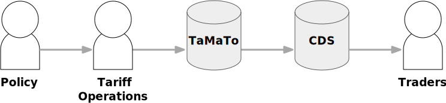

Architecture¶
This page describes the high-level architecture of TaMaTo. If you want to familiarize yourself with the code base, you are in just the right place!
Bird’s Eye View¶
TaMaTo is a data storage and management system that acts as the single source of truth for the UK customs tariff. Its role is to represent trade policy as designed by HM Government’s policy teams in the data domain and transmit this downstream to border systems and other third-party users. It takes data in various formats, validates it, and outputs it in various other formats.
The general principle for UK tariff data is to have border services working from this single source of tariff data as much as possible. This avoids border service delivery teams from having to manually interpret complex tariff policy and configure their services accordingly. In general, we are trying to maximise data flow from the source in policy to use at the border.
Policy teams forming trade policy have a number of levers to use in achieving their aims. New or updated policies will change the tariff rates and controls that are applied, and these changes then need to be reflected in the UK tariff stored in TaMaTo. The main “format” used to do this is the user interface being operated by a domain-aware tariff operations manager, who interprets and applies the policy on behalf of all downstream consumers. Future work will consider more input interfaces, such as the ability of policy teams to control the data directly.
HMRC’s Customs Declaration Services (CDS) system is a primary consumer of data from TaMaTo. There are also a number of other consumers: the Jersey and Guernsey border systems Caesar and GEMS, policy-makers via DIT’s Data Workspace and other third parties via open data.
Concepts¶
TARIC¶
Most UK border systems were previously designed to take customs tariff updates from the European Union. For this reason the tariff domain model and output interfaces match those still used by the EU. This standard is called TARIC (TARif Intégré Communautaire, or Integrated Tariff of the European Communities).
TARIC is a data exchange specification – the models, fields and formats that are used to communicate the tariff are thus pre-specified and are difficult to change. Primarily an XML format is used which follows a TARIC XSD.
TARIC was designed to communicate changes about the tariff – hence there are a number of features that exist specifically to do this. Most notably, the TARIC specification models the tariff as an ever changing transaction stream where each transaction represents a change to a model to be applied.
The streaming nature means that the entire state of the system is decided by the sum total of all of the transactions that have currently been applied – any future transactions are not yet visible. This has an architectural implication that TaMaTo must be able to read data and apply business rules as of a certain transaction as opposed to just considering all data that is present (including e.g. draft data). More detail on what practical difference this makes is in the documentation on 12. Ordering of tariff transactions.
Validity dates as version control¶
The domain model implements a version control system that specifies which models
of the tariff are live on the border on a given day. This allows a tariff update
to be sent to border systems in advance and take effect correctly at some future
time. Most models use a pair of validity dates, implemented using the
ValidityMixin.
Description models have a requirement that there must always be one live
description at any time. For this reason, descriptions do not have end dates and
only have start dates. The description is live up until the start date of the
next description record. This is implemented using the
ValidityStartMixin.
Tracked models as version control¶
The TARIC data exchange communicates about models in terms of what changes are being made to them. Hence, it is not enough for a TARIC-aware system to just have the latest data applied and stored – the system must also keep track of previous versions of models and be able to describe the changes that have been done to them.
Each model will exist multiple times in the database, with each row representing
a new version of that model. This is implemented using the
TrackedModel system.
Note that which version of a model is the “current” one depends in general on what transactions have been applied. Each row is pinned to a specific transaction in order to allow working out which model is the current version as of a certain transaction. As TaMaTo will also deal with draft data, what is “current” is somewhat dependent on what draft data is being considered.
In general, the system will consider any version that has been “approved” to be eligible to be “current”, such that the version from the most recent transaction that is not draft is considered to be “current”.
There are a number of convenience methods for finding “current” models.
- class common.models.trackedmodel.TrackedModelQuerySet(*args, **kwargs)[source]¶
- approved_up_to_transaction(transaction=None) common.models.tracked_qs.TrackedModelQuerySet[source]¶
Get the approved versions of the model being queried, unless there exists a version of the model in a draft state within a transaction preceding (and including) the given transaction in the workbasket of the given transaction.
- latest_approved() common.models.tracked_qs.TrackedModelQuerySet[source]¶
Get all the latest versions of the model being queried which have been approved.
This will specifically fetch the most recent approved row pertaining to an object. If a row is unapproved, or has subsequently been rejected after approval, it should not be included in the returned QuerySet. Likewise any objects which have never been approved (are in draft as an initial create step) should not appear in the queryset. Any row marked as deleted will also not be fetched. If done from the TrackedModel this will return the objects for all tracked models.
Domain Modules¶
The tariffs domain model is implemented across a number of domain modules, each itself a Django App. Each module is responsible for one family of tariff objects.
measures¶
Measures are the fundamental building blocks of the tariff, they link everything together, and each piece of trade legislation that impacts the trade of goods must be translated into one or more measures.
commodities¶
Commodities¶
Commodity codes are 10-digit codes that refer to specific products. Traders must put these codes on their declaration forms when importing or exporting goods.
Nomenclature, also known as goods classification, goods nomenclature or commodity code classification, is the name for the full list of products in the UK Tariff.
TP-803: Commodity Tree Changes¶
Issues To Consider When Changing The Tree¶
Changes to the commodity tree have two main types of considerations:
Do we have a correct commodity tree after the change?
e.g. are all parent, child, sibling and other relations as they should be
the question applies for the changing commodity as well as all commodities in its hierarchy prior and post change (these may or may not be the same depending on the change)
Have we dealt with any side effects on any related taric records
related records may include measures, footnote associations, etc.
affected records may be related to the changing commodity itself or to any commodity in the surrounding hierarchy pre- and post-change (e.g. business rule NIG30 might mean we need to terminate a measure)
side effects are incidental violations of business rules resulting from the changes made to the commodity tree and as such can be caught in the vast majority of cases using existing business rule validation logic in TaMaTo
Requirements For Tackling The Issues¶
In order to handle well commodity tree chanegs in the context of the above two main considerations, we need to adopt a new approach that:
Avoids late fails in terms of firing off business rule violations or post-mortem re-evaluations of the materialized commodity hierarchy
this is particularly relevant when making large-scale changes to the tree, e.g. in the context of HS22
Takes advantage of early detection of side effects by providing automated decision logic for the correct remedy in each case
TP-803’s Bootstrapping Implementation¶
The new approach in TP-803 satisfies the above criteria by “bootstrapping” any pending changes to the commodity tree, providing the ability to view “before” and “after” snapshots of the commodity tree hierarchy pre- and post- pending changes, detecting any potential side effects on related records, and providing a list of pending related record changes that need to be applied alongside the commodity changes.
The following constructs make the bootstrapping approach possible:
Commodity wrapper
the primary benefit of the wrapper is the ability to “fake” changes to the wrapped underlying record for the purposes of previewing the effects and side effects of the change.
one example is “masking” relations fields to avoid complications of dealing with related meta records (e.g. indents in commodities).
the wrapper provides a range of “convenience” methods as additional perks
CommodityCollection
this is just a bag of commodities
included commodities may or may not be effective at the same point in time
the may wrap any version of a good object
commodity changes are applied to this collection construct
CommodityTreeSnapshot
a collection provides the ability to take “snapshots”
a snapshot is a collection of commodities that are in effect as of a given moment, and constitute the tree hierarchy as of that moment
a snapshot can be taken based on one of two “clocks”, but not both:
a calendar clock (what goods were in effect as of date x)
a transaction clock (what goods were in effect as of transaction x)
see the Tariff Manual for further discussion on calendar vs transaction clocks
a snapshot has a tree hierarchy with parent, children and sibling relations as well as traversal-style relations such as ancestors and descendants
SnapshotDiff
a dedicated construct for evaluating snapshot diffs
the key benefit of the construct is clean code
a diff is evaluated in terms of members of a single relation for a single commodity
e.g. what is the difference in the siblings of commodity x between snapshot a and snapshot b?
there are two motivations for using a snapshot diff:
compare the “before” and “after” snapshots around a commodity change
compare the state of the commodity tree at two different points in time (even outside the context of a commodity change)
CommodityChange
a dedicated construct for pending commodity changes
this construct serves as a “watchdog” for pending changes:
it evaluates the “sanity” of a requested change (e.g. if someone requests an update to a non-existing commodity)
it evaluates and determines remedies for any side effects incidental to the pending change
SideEffect
a dedicated construct for side effects and related remedies
the key benefit of the construct is clean code
CommodityTreeLoader
responsible for loading any subset of the tariff db commodity tree into a CommodityCollection (up to a chapter level)
see notes on workfow below for more detail
TP-803 Workflow¶
With the above in mind, the intended workflow that TP-803 envisions (parts of which are implemented elsewhere) is the following:
An incoming Taric envelope is parsed selectively to isolate commodity changes
the initial input can in theory be anything else, e.g. a spreadsheet
The existing commodity tree in the database is loaded into a CommodityCollection using the CommodityTreeLoader (chapter by chapter)
The pending commodity changes are wrapped in CommodityChange instances
side effects are detected at this stage
this involves collection updates, taking “before” and “after” snapshots, plus probing for any related records that might be affected by the change
any required remedies are stored in the instance’s SideEffects list
The collection is updated with the pending changes represented by these objects
At this point we have everything we need in order to be able to write changes to the tariff db that have the intended effect on the tree hierarchy and remedy any side effects on any related records caught up in the change
this is picked up by a separate handler downstream (see scope below)
TP-803 Scope¶
All of the above can be viewed simply as a holding bay slash decision engine; no action is taken until the pending changes to commodities and related records are ultimately applied as transactions in a workbasket downstream. This write stage is the the conern of import handlers and is implemented as a separate feature (see TP-931).
additional_codes¶
Additional codes are used when the 10-digit commodity code is not enough to identify the context for the trade.
For example, for trade remedy purposes most additional codes identify the companies that the trade is coming from.
quotas¶
Quotas are used to control quantities of particular goods being imported.
certificates¶
Certificates, licenses, and non-paper conditions are sometimes required to bring goods through customs.
A certificate is not a representation of the actual document itself – the database stores only a certificate code (4 digits) and a description of that code.
geo_areas¶
Geographical areas represent areas to which goods can be imported or exported.
All measures and quotas apply to a geographical area which may contain single or multiple countries.
regulations¶
Regulations represent pieces of legislation that empower tariff measures.
footnotes¶
Footnotes are used to give more human-readable information about measures or the use of commodity codes.
Inside Domain Modules¶
Each domain module has a similar layout, some of which is inherited from the Django system. Inside each domain module, you might expect to see the following, either as modules themselves or single files.
models¶
Classes representing domain models. With again a few exceptions, most models
correspond directly to an element in the TARIC specification. Most of these will
inherit from TrackedModel which represents a
model for whom history is being tracked.
The most notable places where the database schema has diverged from the TARIC
specification is on descriptions, which have been flattened into a single model
that represents both the description and the description period on the
assumption that we will only support English as a language, and for
regulations, where the UK legislative model is considerably simpler than
its European counterpart.
business_rules¶
Classes that implement business logic checking on models. Most of the business rules are defined by the TARIC specification. There are also some places where new business rules have been written either based on observation of how downstream systems react to certain situations or through a desire to more tightly control the function of the system.
Business rules from the TARIC specification are named for the business rule code
used in that spec (e.g. ME32) and business
rules that have been added to the system are given descriptive names. Each
business rule has a docstring that describes the rule.
patterns¶
Objects that implement an operation on the data taking into account the high-level domain logic around how the tariff actually works. These are responsible for providing a simple interface to create data that will pass the more complex business rules around relationships between models and for encoding how certain situations are handled.
For example, “origin quotas” are a special kind of quota that require a proof of
origin certificate, and the MeasureCreationPattern
has a specific argument to its
create() method that will set up
the measure conditions correctly to handle this use case. There is nothing in
the business rules that specifies how origin quotas should be handled (and hence
it may change in the future), but at the moment they are always implemented in a
specific way and the pattern encodes that implementation.
So where the tariff works a certain way as the result of a business decision as opposed to a constraint in the data, that decision should be implemented as a pattern.
serializers¶
Classes that implement serialization logic. Most are derived from Django REST Framework’s serializer base class. The serializers are mostly used to output TARIC3 XML and for this they rely on XML templates written in the Jinja2 templating language.
import_parsers and import_handlers¶
These are classes that extract data from TARIC XML and process that data into complete models with all linked dependencies respectively.
See the documentation on the importer for a full description.
validators¶
Classes that implement model-specific validation routines. These mostly implement rules around the correct formatting of data (e.g. if the code of a model has the correct number of digits) compared to the business rules which check correctness of fields and relationships between models.
querysets¶
Implementations of custom Django QuerySet classes that represent complex database queries. In some places it is desirable to more tightly control how the system fetches it’s data – for example, to efficiently generate a new field using aggregates.
The TrackedModelQuerySet is one of the most used
as it implements selecting the correct versions from the version control system.
parsers¶
Classes that implement custom parsers for use in translating from simple strings in the user interface or spreadsheets into model objects (or sets of them). These do not generally follow a specific implementation pattern.
filters¶
Django-style filter objects used by the search interfaces.
views¶
Django-style view objects used by the user interface.
Cross-Cutting Modules¶
As well as domain modules, there are also a number of modules that provide cross-cutting concerns to the rest of the system.
importer¶
Implements a scalable and robust system for extracting data from TARIC XML seed and delta files and storing them correctly in TaMaTo.
See the documentation on the nursery,
handlers, parsers, namespaces
and taric for more information.
exporter¶
Classes for exposing a number of different output data formats.
Most notably, the exporter module implements the correct output of the transaction stream into TARIC XML envelopes and handles the process by which these envelopes are marshalled to CDS.
This module also makes available the objects in the system as an ActivityPub endpoint.
See the documentation on the exporter for a full description.
hmrc_sdes¶
Provides the ability to communicate with HMRC’s Secure Data Exchange Service (SDES).
When TaMaTo wants to send tariff updates to CDS, it must first make an
Envelope file available from an SFTP endpoint. It must
then notify SDES via an HTTPS API that a file is ready to be downloaded. This
module makes available the API client library to make the call.
More information about SDES is available from the HMRC developer hub.
taric¶
Implements models used by the exporter to keep track of which
envelopes the system has generated and which transactions they contained.